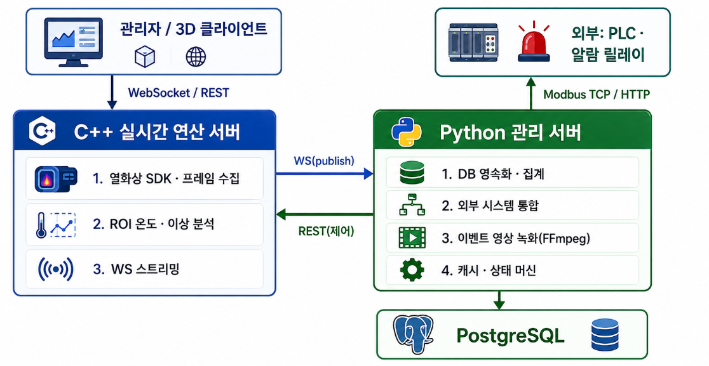

C++ 연산 서버
C++20Boost.Asiocoroutinestrand
CITY_SAFE · C++ / Python Backend
실시간 연산은 C++ 서버가 담당하고, 영속화·외부 통합·녹화·운영 상태 관리는 Python 관리 서버가 담당하도록 2-프로세스 백엔드 구조를 설계·구현했습니다.
전기차 배터리 화재·과열·이상 감지 시스템에서 두 서버가 동일한 운영 가설인 “최신 상태 우선, 손실 허용, 영구 다운 금지”를 공유하도록 인터페이스와 장애 처리 정책을 맞췄습니다.
C++ 서버는 열화상 SDK, 프레임 수집, ROI 온도·이상 분석, WebSocket 스트리밍에 집중하고, Python 서버는 DB 영속화·집계, 외부 시스템 통합, 이벤트 영상 녹화, 캐시·상태 머신을 담당했습니다.

데이터 평면: C++ → Python, WebSocket publish 방식으로 이벤트를 push합니다.
제어 평면: Python → C++, REST 방식으로 카메라·센서 connect/reconnect, ROI reload를 요청합니다.
검출 상태와 타임스탬프 등 여러 공유 맵이 뮤텍스 보호 없이 여러 스레드에서 접근해 data race와 dangling 참조 위험이 있었습니다.
공유 상태를 카테고리별 뮤텍스로 나눈 단일 컨테이너로 응집하고, 카메라별 독립 락을 부여하는 방향으로 설계했습니다.
카메라 A의 갱신이 카메라 B의 스트림 송신을 막지 않고, 카메라 수가 늘어도 락 객체가 함께 늘어 선형 확장할 수 있도록 했습니다.
양방향 shared_ptr 순환 참조로 누수가 발생할 수 있고, 컨테이너에서 erase된 락 객체를 비동기 콜백이 참조할 수 있었습니다.
단방향 소유 트리를 강제하고, 콜백은 필요한 shared_ptr만 캡처하도록 했습니다. 카메라별 상태는 공유 소유해 콜백 생존 동안 락도 살아있도록 설계했습니다.
누가 누구를 살려두는지가 명확해져 lifetime 추적이 가능해졌습니다.
송신·분석 큐에 상한이 없으면 느린 클라이언트나 처리 지연 시 메모리가 무한 증가하고, 이전 프레임 처리 중에도 작업이 중첩 제출될 수 있었습니다.
WS 송신 큐에는 상한과 오래된 프레임 폐기 정책을 두고, ROI 분석은 카메라별 in-flight 플래그를 compare_exchange_strong으로 제어했습니다.
lock contention 없이 느린 소비자에 대한 백프레셔를 구현했습니다.
단일 io_context와 단일 풀에서 ROI 분석 같은 CPU 집약 작업이 네트워크 응답성을 잠식할 수 있었습니다.
IO, ROI, 인코딩을 3개 전용 풀로 분리하고, 각 풀의 스레드 수를 코어 수 기반으로 산정했습니다.
CPU 작업이 네트워크 스레드를 굶기지 못하도록 격리했습니다.
asyncio 이벤트 루프 안에서 동기 SQLAlchemy를 직접 호출하면 이벤트 루프 전체가 멈출 수 있었습니다.
hub는 큐에 넣는 producer 역할만 하고, 별도 worker가 sync DB 작업을 전담하도록 분리했습니다.
기존 sync 도메인 코드를 유지하면서도 이벤트 루프를 보호하고, 큐 자체를 자연스러운 백프레셔 지점으로 활용했습니다.
운영 중 C++ 서버가 재기동되어도 Python 관리 서버와 클라이언트 응답은 살아있어야 했습니다.
WebSocket 재연결에 3초에서 30초 cap까지 지수 백오프를 적용하고, 재연결 직후 클라이언트가 구독했던 카메라를 자동 재구독했습니다.
데이터 소스가 재기동되어도 관리 서버가 죽지 않고, 클라이언트가 단절을 인지하지 못하도록 복구 흐름을 설계했습니다.
큐와 worker를 카테고리별 1:1로 독립시켜 한 카테고리 지연이 다른 카테고리를 막지 않도록 했습니다. 큐가 가득 차면 현재 입력은 drop하고 캐시는 갱신해 알람 즉시성을 우선했습니다.
상태 모니터 루프와 hub가 매번 DB를 조회하지 않도록 읽기는 캐시, 쓰기는 DB+캐시 동시 갱신 정책으로 평균 DB 왕복을 줄였습니다.
진행 중 이벤트를 종료 시각이 비어있는 열린 로그 하나로 표현하고, 같은 키로 두 개가 열리지 않도록 멱등 처리했습니다. 감지 신호가 끊기면 타임아웃으로 자동 종료했습니다.
종료 순서를 알람 릴레이 → 외부 PLC 연결 → 내부 asyncio 워커 순으로 설계하고, 각 단계에 타임아웃과 강제 cancel fallback을 두었습니다.
부모 프로세스가 강제 종료되어도 자식 FFmpeg가 RTSP를 계속 점유하는 문제를, ctypes로 Win32 Job Object를 생성해 부모 종료와 자식 정리를 OS 레벨에서 결합하는 방식으로 해결했습니다.
이벤트 종료 즉시 녹화를 끊으면 마지막 파일 길이가 어중간해지는 문제를, 다음 5분 경계까지 녹화 후 stop하는 정책과 time.monotonic()으로 해결했습니다.
C++ 서버가 재기동되어도 Python 관리 서버가 살아 있고, 재연결 직후 기존 구독을 자동 복구해 클라이언트가 단절을 크게 인지하지 않도록 했습니다.
| 영역 | 항목 | 개선 방향 |
|---|---|---|
| Python | sync SQLAlchemy | asyncio + asyncpg 비동기 전환으로 to_thread 오버헤드 제거 |
| Python | 개별 DB write | worker가 큐에서 배치로 모아 batch INSERT |
| 공통 | 관측성 부족 | Prometheus 메트릭, Dead Letter Queue |
| 공통 | 테스트 | 상태 머신·IOU 도메인 유틸의 결정성 단위 테스트 |
| C++ | 락 경쟁 가시성 | 카메라별 lock contention 프로파일링 도구 |
| C++ | 이식성 | CMake 기반 Linux 빌드 검증 |
처리량과 지연 특성에 따라 이기종 서버의 책임을 나누고, 두 프로세스가 하나의 운영 가설을 공유하도록 인터페이스와 장애 처리 정책을 일관되게 맞추는 경험을 했습니다.
C++ 저수준 동시성은 프로젝트에서 재설계 방향을 도출하며 접했고, 이후 데이터 레이스, lock ordering, strand, coroutine, backpressure를 꾸준히 심화 학습하고 있습니다.